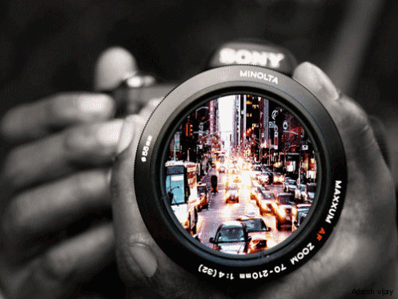
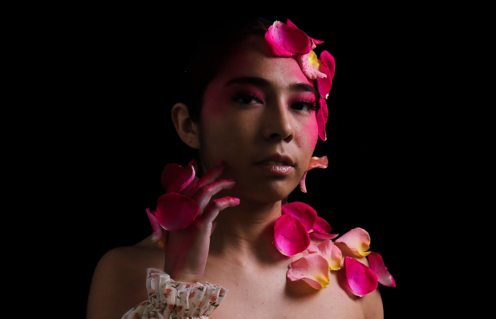
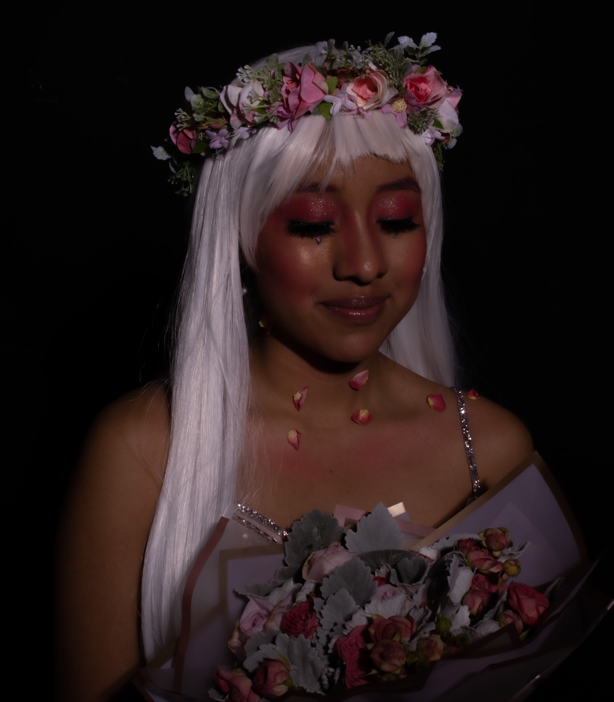

Fotografía
La fotografía es un "procedimiento o técnica que permite obtener imágenes fijas de la realidad mediante la acción de la luz sobre una superficie sensible o sobre un sensor.". Actualmente la considero una de las áreas en las que me destaco y me gustan más.
Esto se debe a que en sexto semestre curse la optativa de fotografía profesional en la que específicamente aprendemos fotografía de moda. En esta materia pude aprender realmente a usar una cámara, así como distitnas técnicas de iluminación que fuimos empleando en las diferentes prácticas.

Fotografía de moda
Para esta materia formamos equipos y en conjunto elegimos una temática que debíamos seguir a lo largo del semestre. En nuestro caso la temática fue romántica junto con la estación de primavera. Es por esto que elegimos una paleta de colores rojo, y varias tonalidades de rosa, así como elementos florales y frescos.
La primera práctica llevaba por nombre "Rembrandt", ya que la luz debía llegar desde un ángulo de 30 a 45° produciendo un efecto similar al de las pinturas del famoso pintor.

Fantasía
 Otra de las prácticas que realizamos con modelo fue la de maquillaje de fantasía. Este lo realizamos siguiendo la temática romántica por lo que realizamos un maquillaje con la paleta de colores que ya teníamos y usamos de nuevo elementos florales.
Otra de las prácticas que realizamos con modelo fue la de maquillaje de fantasía. Este lo realizamos siguiendo la temática romántica por lo que realizamos un maquillaje con la paleta de colores que ya teníamos y usamos de nuevo elementos florales.
Al ser un maquillaje de fantasía debía ser bastanate llamativo y saturado, por ello ocupamos sombras y un contour en tonos fucsia, complementado con pedrería. En el cuello y parte de las manos pegamos pétalos de flores inspirándonos en el primer look que realizamos. Finalmente ocupamos una peluca de color blanco.
En esta sesión ocupamos dos diferentes técnicas de iluminación, la primera fue la de bandera bloqueadoras, en las que usamos dos cuadros de acríclico para tapar parte de la luz emitida por la lámpara, de modo que solo pasaba a través de un recuadro, logrando así hacer enfásis, en este caso, en los ojos de la modelo.
La segunda técnica de iluminación que utilizamos fue la de emplear una pantalla o rebotador a 10° es decir debajo de la modelo, esto para rebotar la luz de la lámapra y que la cara de la modelo quedara más iluminada.
Esta práctica la realizamos el mismo día por lo que utilizamos la misma modelo y maquillaje de fantasía que ya habíamos realizado, solo agregamos otros elementos, en esta foto en particular vemos a la modelo sosteniendo un ramo de flores.
Al tomar esta materia pude aprender como esta muchas más técnicas de iluminación que me podrían ser de utilidad si algún día quiero dedicarme a la fotografía de moda. Algunas otras que recuerdo fueron las prácticas de alto y bajo contraste, en la primera se sobreexpone la imagen de modo que predominan las zonas con luz, mientras que el bajo contraste es lo contrario, imágenes con sombras muy marcadas creando un fuerte constraste con las pocas zonas iluminadas.
Fotografía de objetos
A la par de las sesiones en el estudio, realizábamos fotografías en el exterior, estás siempre eran de objetos, cada semana la profesora nos asignaba uno diferente. En estas usamos una variedad de materiales para complementar las fotos como cartulinas de colores, espejos, agua, flores, entre otras cosas.
Para estas fotografías también tuvimos que seguir con la temática que habíamos elegido por lo que en estas también manejamos una paleta de colores rosas y rojas, flores, agua y otros elementos que remiten a la naturaleza. Para estas fotos la profesora nos pedía tomar fotos en tres ángulos diferentes: picado, cenital y contrapicado.
A lo largo del semestre realizamos aproximadamente 6 prácticas de este tipo:
- Crema humectante
- Joyería
- Zapatos
- Bolso
- Cosméticos
- Maquillaje de fantasía
En cada calse pusimos en práctica diferentes técnicas, por ejemplo con las fotografías de joyería aprendimos a hacer bukeh, fotos con luz y sobra y usando la profundidad.